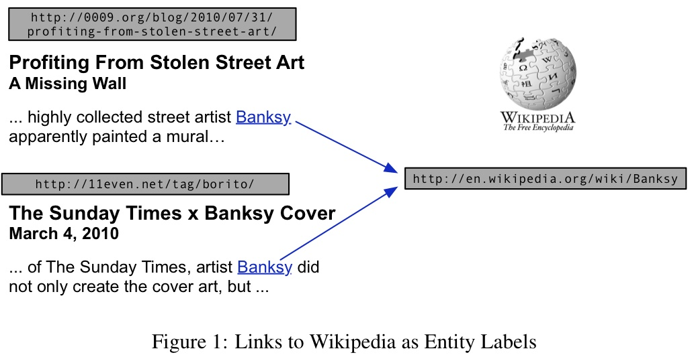

Cross-document coreference resolution is the task of grouping the entity mentions in a collection of documents into sets that each represent a distinct entity. It is central to knowledge base construction and also useful for joint inference with other NLP components. Obtaining large, organic labeled datasets for training and testing cross-document coreference has previously been difficult. We use a method for automatically gathering massive amounts of naturally-occurring cross-document reference data to create the Wikilinks dataset comprising of 40 million mentions over 3 million entities. Our method is based on finding hyperlinks to Wikipedia from a web crawl and using anchor text as mentions. In addition to providing large-scale labeled data without human effort, we are able to include many styles of text beyond newswire and many entity types beyond people.

Manually labeling mentions with the entities they refer to is time-consuming and expensive annotation task. However, page authors often use hyperlinks to annotate some of the mentions in their texts with extra information. If these links are to Wikipedia pages, then the link targets can be used to disambiguate the mentions from each other. For example, consider the two mentions of "Banksy" from different webpages (as shown in the figure). Since both links point to the same Wikipedia entity, it is likely that the two mentions refer to the same entity. Using this approach, we are able to construct an automatically annotated dataset of containing the mentions extracted from the web and the entities in Wikipedia that they refer to.
The dataset has been described in the following technical report: Wikilinks: A Large-scale Cross-Document Coreference Corpus Labeled via Links to Wikipedia
If you use the dataset, please use the following citation:
@techreport{singh12:wiki-links,
author = "Sameer Singh and Amarnag Subramanya and Fernando Pereira and Andrew McCallum",
title = "Wikilinks: A Large-scale Cross-Document Coreference Corpus Labeled via Links to {Wikipedia}",
institute = "University of Massachusetts, Amherst",
number = "UM-CS-2012-015",
year = "2012"
}As provided by Google, this dataset provides URLs of webpages, along with the anchor of the links, and the Wikipedia pages they link to. As provided, this dataset can be used to get all the surface strings that refer to a Wikipedia page, but further, it can be used to download the webpages and extract the context around the webpages (see below).
Download the dataset here: http://code.google.com/p/wiki-links/downloads/list
You can directly download all the files using the following command (bash):
for (( i=0; i<10; i++ )) do echo "Downloading file $i of 10"; wget https://wiki-links.googlecode.com/files/data-0000$i-of-00010.gz ; doneUMass has created expanded versions of the dataset containing the following extra features:
We also describe the steps used to create the dataset here.
The expanded dataset is available in different versions.
The smallest version that contains the context and the freebase id is ~5GB in size. You can directly download the files from http://iesl.cs.umass.edu/downloads/wiki-link/context-only/ or use the following script (run in an empty directory):
for (( i=1; i<110; i++)) do echo "Downloading file $i of 109"; f=`printf "%03d" $i` ; wget http://iesl.cs.umass.edu/downloads/wiki-link/context-only/$f.gz ; done ; echo "Downloaded all files, verifying MD5 checksums (might take some time)" ; diff --brief <(wget -q -O - http://iesl.cs.umass.edu/downloads/wiki-link/context-only/md5sum) <(md5sum *.gz) ; if [ $? -eq 1 ] ; then echo "ERROR: Download incorrect\!" ; else echo "Download correct" ; fiThis version of the dataset contains the context, freebase ids, raw file, cleaned DOM structure, and the full article text. Hence, the overall size of this dataset is ~180GB.
The dataset is available here: http://iesl.cs.umass.edu/downloads/wiki-link/full-content/part1/ and http://iesl.cs.umass.edu/downloads/wiki-link/full-content/part2/. It is in the same format as above, with accompanying md5sum files.
This dataset was created at Google, partly by Amarnag Subramanya, Fernando Pereira, Sameer Singh and Andrew McCallum. We would also like to thank Brian Martin, Harshal Pandya, and John R. Frank for contributing to the code that downloads, processes, and analyzes the data. This page is currently maintained by Sameer Singh.
List of papers that describe the dataset, or use it (or a variation) for evaluation.